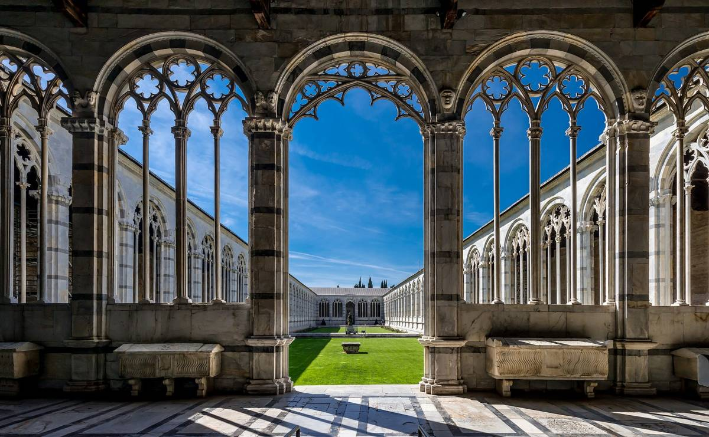
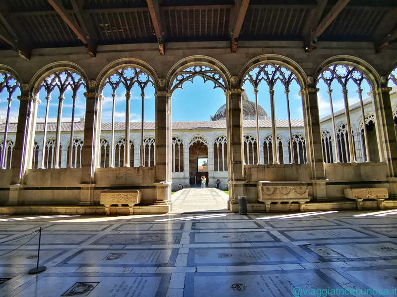
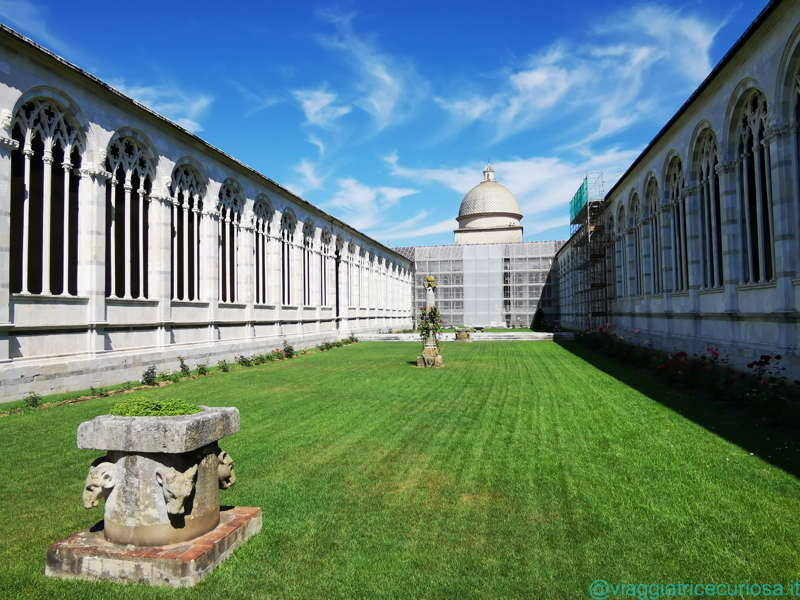
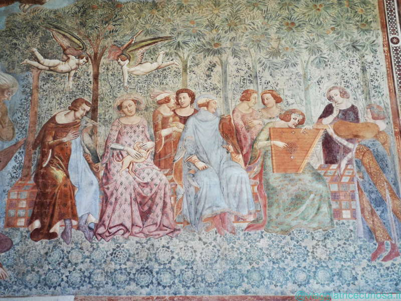
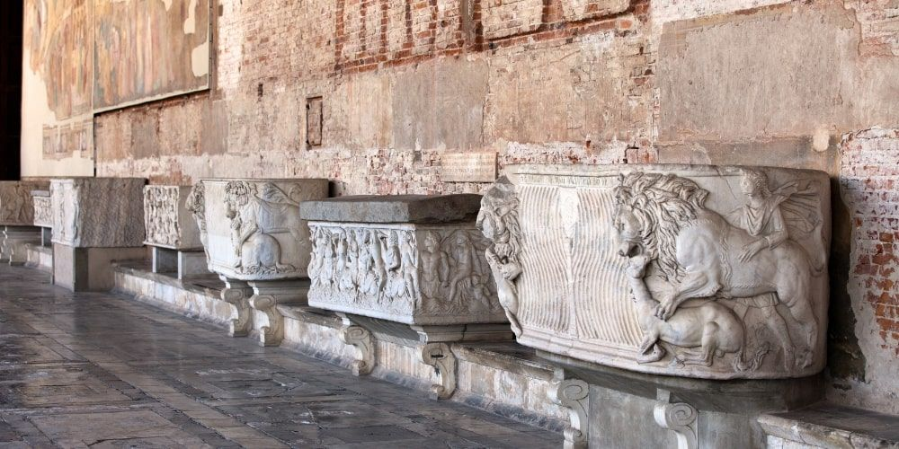
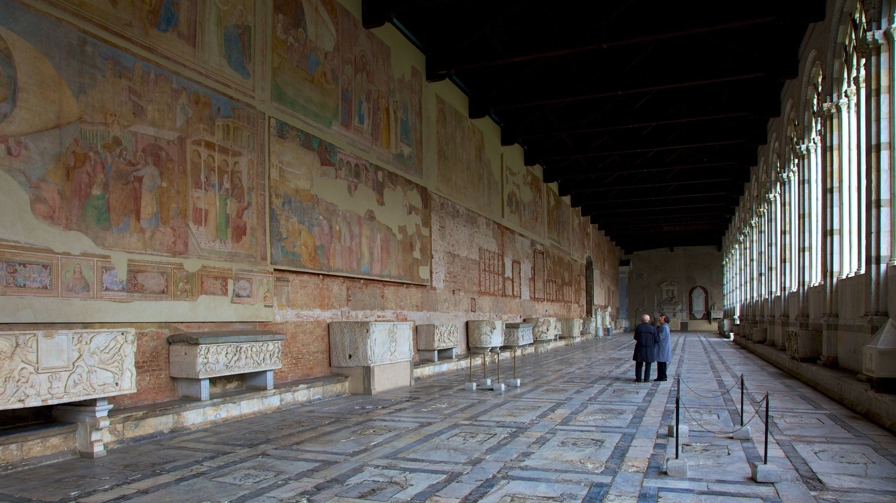
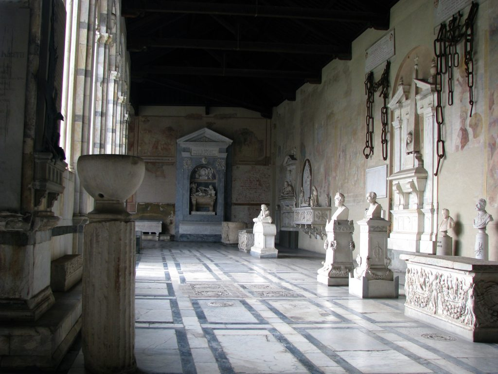
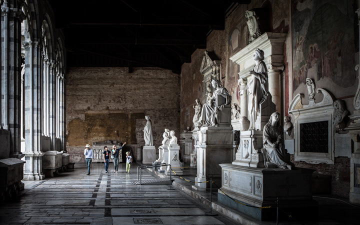

01 / 06
Struttura e rilievo
Il sarcofago è in alto rilievo, con figure e decorazioni volumetriche. Si nota un cornicione superiore modanato e un plinto di base liscio.
Camposanto Monumentale · Pisa
II secolo d.C. · Il più antico sarcofago romano databile
Il sarcofago di Caius Bellicus Natalis Tebanianus è conservato nel Camposanto Monumentale di Pisa ed è considerato il più antico sarcofago romano databile con una certa esattezza, dopo i rari esempi repubblicani e il problematico sarcofago Caffarelli.
L'iscrizione informa che appartenne a Caius Bellicus Natalis Tebanianus, console nell'87 d.C. e morto attorno al 110. La fronte, alta 0,78 metri, è decorata da festoni popolati da figure e piccole scene romane.
CIL XI, 1430 — IscrizioneG(aius) Bellicus Natalis Tebanianus co(n)s(ul) /
XVvir Flavialium.
La sua importanza sta nella ripresa dell'inumazione nel mondo romano a partire dal tardo I secolo d.C. I prototipi dell'Asia Minore erano scolpiti su quattro lati; nella produzione romana, pensata spesso per essere allineata lungo le pareti, la scultura si concentrava su tre lati.
01 / 06
Il sarcofago è in alto rilievo, con figure e decorazioni volumetriche. Si nota un cornicione superiore modanato e un plinto di base liscio.
02 / 06
Il fronte è strutturato attorno a una figura che tiene due grandi festoni centrali, carichi di frutti (come uva e fichi) e fiori; negli spazi liberi — i "campi" — sono inserite piccole scene.
03 / 06
Nel campo a sinistra una figura femminile drappeggiata è sdraiata e solleva un lembo di stoffa, con un satiro al suo fianco che la osserva.
04 / 06
Nel campo di destra appare una figura femminile con l'elmo: probabilmente un munus funebre, giochi gladiatori in onore del Console defunto. Le figure con le mani legate rappresentano i prigionieri condannati; una figura maschile nuda e muscolosa assiste alla scena.
05 / 06
I sarcofagi romani di questo tipo erano scolpiti solo su tre lati; il retro era liscio per l'allineamento lungo le pareti della camera funeraria. Pertanto, il lato posteriore non è scolpito.
06 / 06
Nei lati minori campeggia una grande maschera bacchica con espressione grottesca e corrucciata, bocca aperta e capelli folti. Sotto la maschera lo stesso ricco festone di frutti forma un semicerchio, affiancato da un erote di sostegno nude.
Dove si trova
Posizione del sarcofago nel camposanto monumentale
Fondato nel 1277 per volere dell’Arcivescovo Federico Visconti, il Camposanto nacque come luogo «ampio e decoroso, appartato e chiuso» per raccogliere le tombe fino ad allora sparse attorno alla Cattedrale. È l’ultimo dei grandi monumenti della Piazza del Duomo e la sua lunga parete marmorea ne chiude il lato settentrionale.
Nel Trecento le pareti interne si animarono di affreschi sul tema della Vita e della Morte: Francesco Traini e Bonamico Buffalmacco vi lavorarono ispirandosi alle prediche del domenicano Cavalca e alle visioni dantesche. Il ciclo si estese poi con le opere di Andrea Bonaiuti, Antonio Veneziano, Spinello Aretino e, nel Quattrocento, di Benozzo Gozzoli.
Archivio








Esplora liberamente
Ruota il sarcofago a piacere, misura le proporzioni reali, cambia l'illuminazione o salva uno screenshot del punto di vista che preferisci.
sarcofago.nxz · Powered by 3DHOP — CNR-ISTI